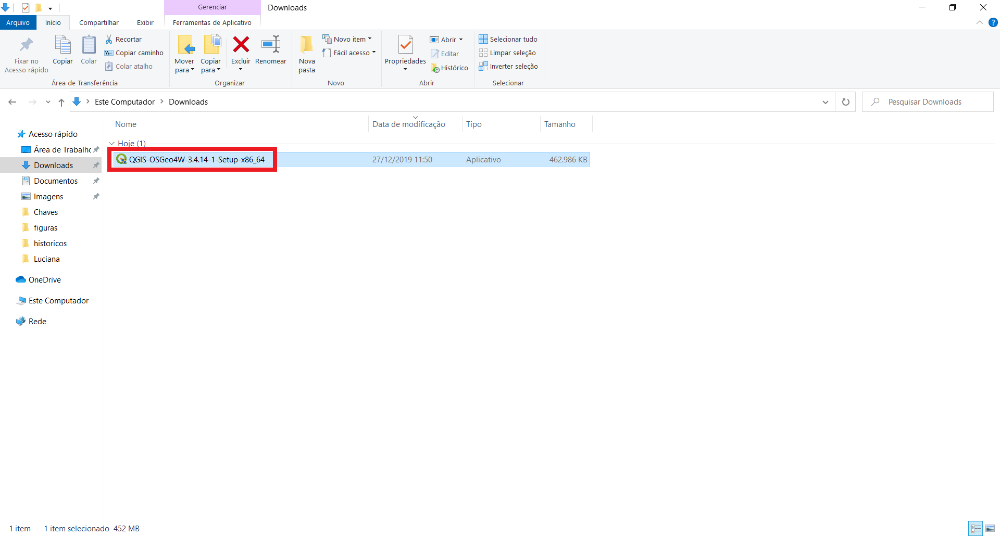
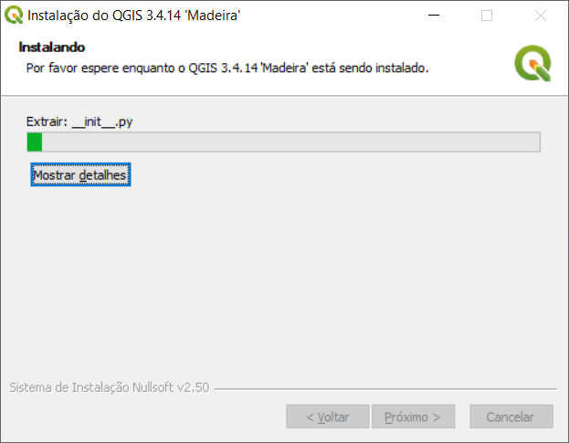

Instalação do QGIS para Microsoft Windows 10¶
Na página principal do aplicativo QGIS, selecione a opção Download Now, como mostrado na figura abaixo.
{kind=link}
Na página de Downloads, selecione a opção Download for Windows e baixe a versão QGIS Standalone Installer Version 3.4 (64 bit), conforme mostrado na figura abaixo.

Após concluir o download do instalador, siga os passos mostrados a seguir:
1. Abra o instalador:
{kind=link}
2. Uma janela com o logo do QGIS será aberta. pressione Próximo para continuar:
{kind=link}
3. O QGIS é baseado em diversos softwares livres. Nessa janela você deverá aceitar os termos da licença do QGIS e de outros sistemas ou bibliotecas. Pressione Eu Concordo para continuar:
{kind=link}
4. Se você possui um disco SSD de pequeno porte, sugerimos alterar o local da pasta de destino do QGIS para um disco com maior capacidade, pois a instalação irá ocupar em torno de 1.93GB. Aponte para a pasta desejada e pressione Próximo para continuar:
{kind=link}
5. Nessa janela você não precisará baixar os dados de exemplo, pois preparamos diversos conjuntos de dados para o curso que serão compartilhados com todos. Pressione Instalar para continuar:
{kind=link}
6. Essa janela mostra apenas que o processo de instalação encontra-se em progresso:
{kind=link}
7. Ao final da instalação, uma janela como mostrada abaixo será apresentada. Pressione Terminar para finalilzar a instalação:

8. No menu Iniciar, localize o grupo de aplicativos QGIS 3.4. Iremos utilizar o QGIS Desktop 3.4.14:
{kind=link}
9. Se a instalação foi concluída com sucesso, ao iniciar o aplicativo QGIS Desktop 3.4.14, uma janela como a mostrada abaixo será exibida:
{kind=link}
Note
Mais informações sobre a instalação no Microsoft Windows 10 podem ser encontradas em: QGIS Installers.